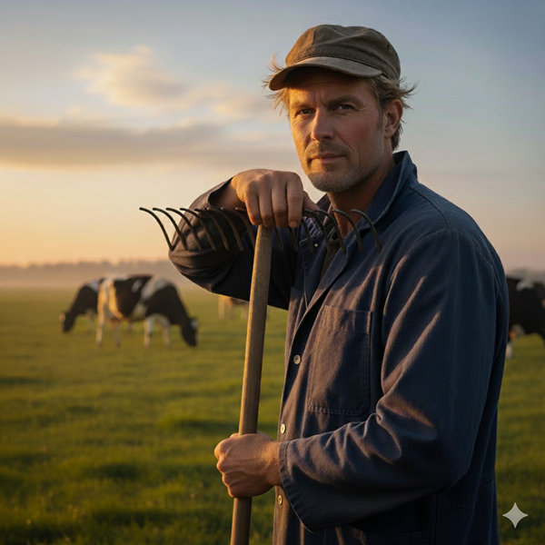

Welkom op mijn website!
Mijn naam is Henk Karelse en ik run melkveebedrijf Karelse te Loppersum.
Ik lever zowel aan de grootgrutter als de middenstand, maar ook direct aan de klant op bestelling.
Door mijn jarenlange ervaring als melkveehouder – 7e generatie in de lijn Karelse melkveehouders – bent u bij mij op het juiste adres voor al uw melkveeproducten, zoals verse melk, yoghurt, kaas en vlees.
Klik verder op de website om kennis te nemen van mijn ervaring en expertise.
Kom ook eens langs in onze boerderijwinkel met een groot aanbod aan verse producten, direct van het land!
Tot uw dienst!